从对话建单，
到仿真证据沉淀。
配置模型后，可以与 Agent 对话创建任务草稿、查询并总结任务进展、创建或更新建议型策略 Skill。也可以使用页面表单完成相同步骤。完成 Baseline 后，可在任务页修改参数、比较版本并追溯求解证据。点击截图上的红色数字查看操作提示。
打开工作台，确认状态
桌面应用启动后进入“概览”。浏览器诊断可在本机启动 Core 后访问工作台，但托盘和桌面生命周期需要用 Electron 验证。
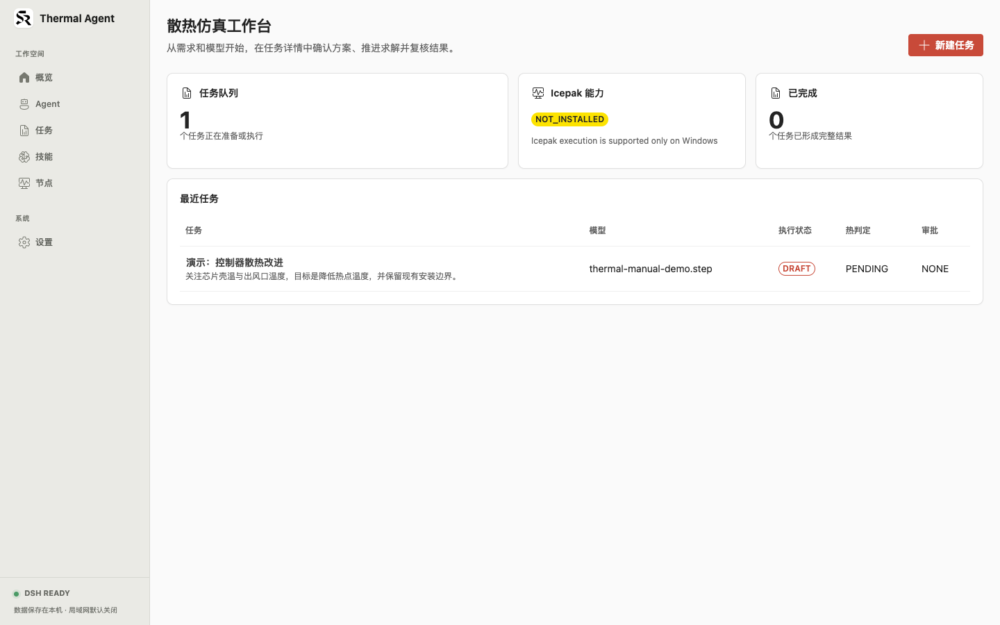
配置模型后，用对话推进工作
在桌面 App 的“设置 → DSH 原生设置”配置模型与 API 密钥，然后打开“Agent”对话。Agent 会调用应用内的任务和策略工具，帮助把自然语言变成结构化记录。
- 建单示例：“为 CTRL-100 创建散热任务草稿：环境 35 °C、持续负载 80 W，目标最高 85 °C，关注主芯片壳温，外壳尺寸不变。请先检查重复任务并说明推荐策略。”
- 跟进示例：“查看刚才创建的任务，汇总当前执行状态、最新 Attempt、温度证据、未解决问题和下一步。”
- 策略沉淀示例：“基于这次已确认的经验，新增一个建议型导热策略 Skill；先检查是否已有相似策略，没有实测降温数据就标记待验证。”
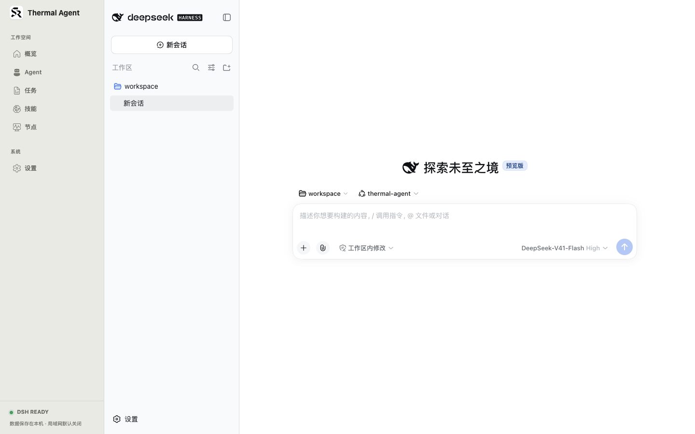
核对或填写散热需求
Agent 建立的草稿可在此载入，也可直接手工新建。核对任务名称、工况、热目标和不可改动的边界；字段会进入任务详情，供专家复核。
- 点击“新建任务”。载入 Agent 草稿，或填写任务名称、客户与项目、产品型号、工况、详细需求。
- 填写目标与约束。Icepak 求解前必须有最高温度目标；关键监测点、允许调整范围和专家补充建议用于界定方案。
- 核对 AEDT 版本。上传 .aedt 前，将版本改为与本机安装一致的值。
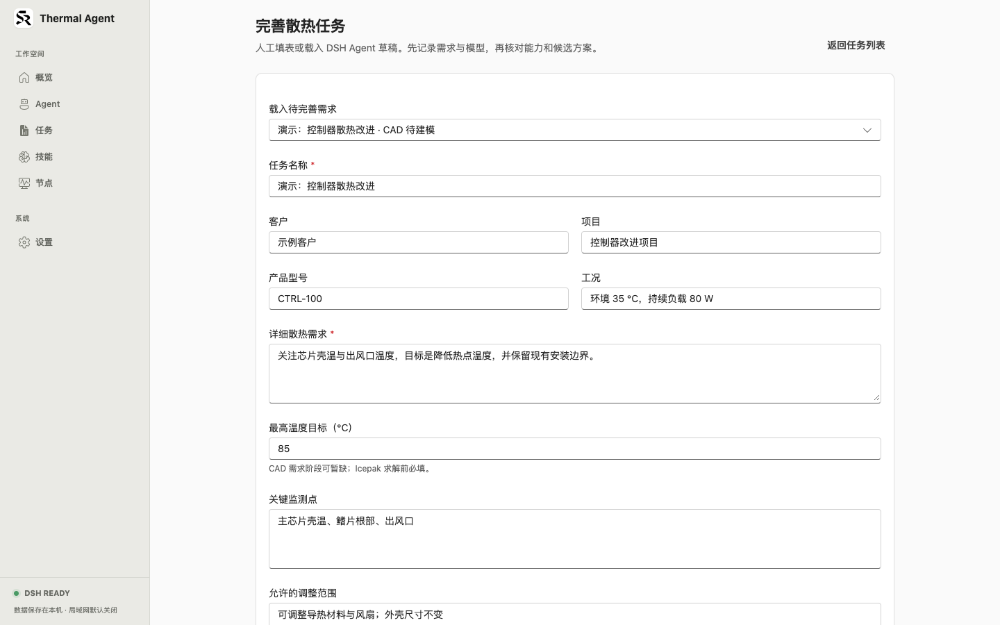
上传模型并检查能力
可上传一个 .aedt 工程，或先上传 STEP、IGES、Parasolid、ACIS 中性 CAD 文件。点击“上传并检查模型能力”后查看结果。
| 输入 | 检查结果与下一步 |
|---|---|
| CAD 几何 | 归档为待建模需求草稿。需先建立包含材料、热源、边界、监测点和 Setup 的 Icepak 工程，再回到草稿上传 .aedt。 |
| .aedt 工程 | 检查设计和 Setup，导出只读参数清单；曲线型原生风扇会额外执行不求解的写入／读回验证。只有检查通过才能进入 Baseline。 |
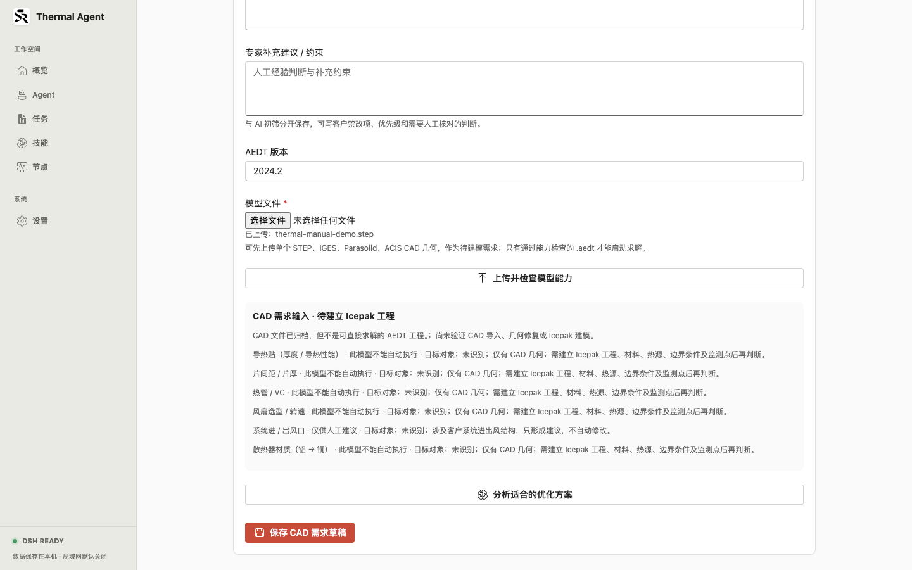
分析候选方案并人工选择
“分析适合的优化方案”按需求关键词给出初筛建议。选择范围前，先核对模型能力状态和诊断依据。
- 点击“分析适合的优化方案”，阅读命中依据及每条策略的能力标记。
- 对 .aedt 任务，勾选本次纳入的方案，并确认需求、模型能力与方案范围；不选策略也可先做 Baseline。
- 只有已验证的风扇动作，才可单独授权“Baseline FAIL 后自动尝试所列全部风扇 +10%”一次。此自动流程与手动结构候选共用一次 Candidate 额度；希望自行比较参数版本时，可先只运行 Baseline。需要启动求解时，再选“提交后立即启动”。
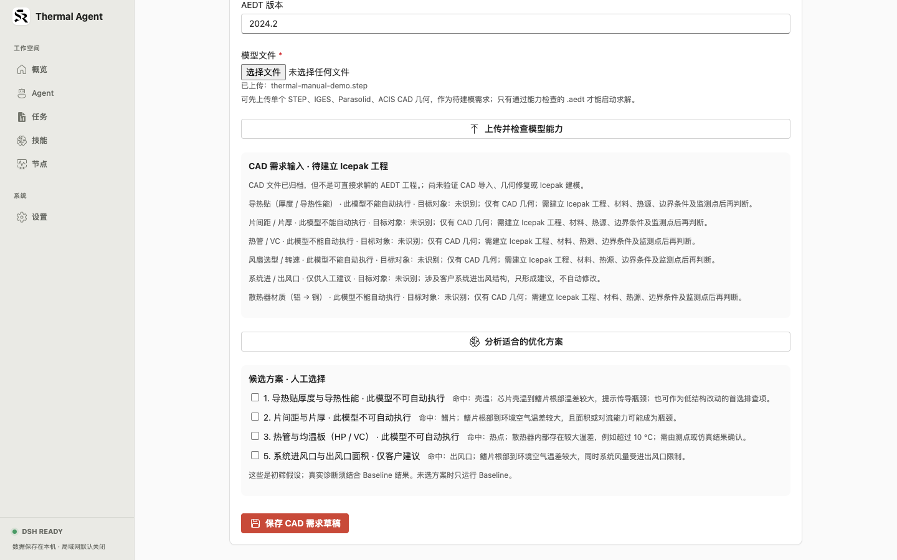
回到任务详情跟进
任务列表显示模型、执行状态、热判定和审批。完成 Baseline 后，详情页顶部的“参数修改与追溯”可编辑参数、查看历史版本；侧栏“调整参数方案”也会跳到此处。进入详情后集中查看需求、求解证据与推进记录；也可直接让 Agent 读取任务并用对话总结最新进展。
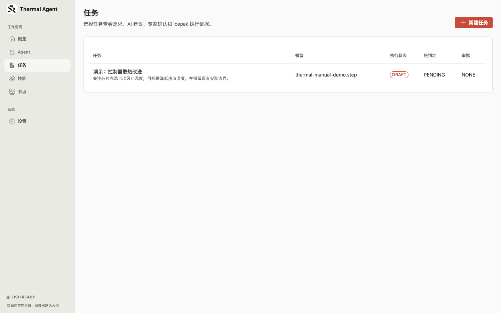
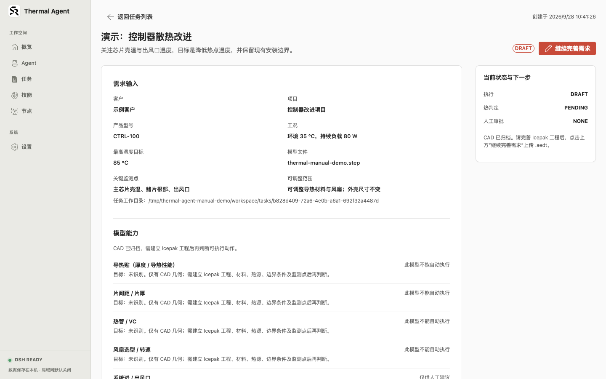
Windows AEDT：运行与复核
以下步骤需要在已安装兼容 AEDT、PyAEDT 且可使用求解许可证的 Windows 机器上执行。本机 Mac 演示未运行真实求解。
- 进入“设置 → Icepak 插件”，完成 AEDT/PyAEDT 识别、独立会话启动验证和内置示例工程检查。示例检查不运行求解。
- 在任务表单上传客户 .aedt，运行模型能力检查；确认版本、设计、Setup、目标风扇及参数清单。
- 选择优化方案并确认需求。可立即启动本机 Baseline，或创建任务后在详情页启动。真实运行会占用求解许可证。
- 在任务详情核对最高温度、监测点、收敛结果和 Artifact 证据。若 Baseline 为 FAIL 且尚未执行结构候选，可进入“参数修改与追溯”生成并验证方案，再启动候选求解。完成后人工接受或拒绝；接受且证据齐全时可生成 PDF 报告，并按需沉淀 Skill 草稿。
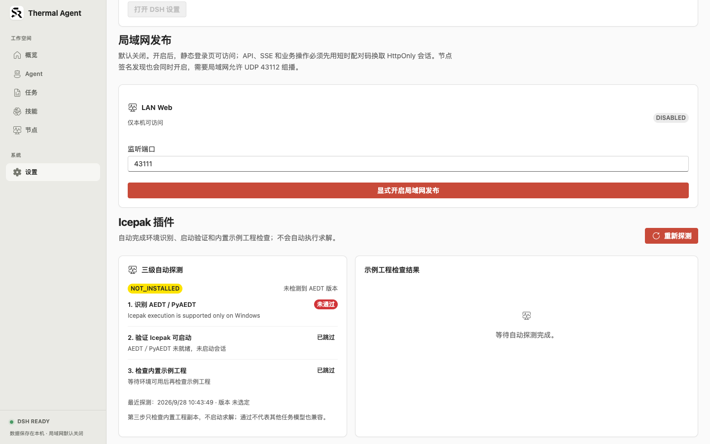
在 Task 中编辑参数
完成一次具有收敛证据的 Baseline 后，打开任务详情顶部的“参数修改与追溯”。每版方案都以此 Baseline 为起点，先验证修改，再决定是否求解。
| 可编辑类型 | 如何填写 | 需要满足的条件 |
|---|---|---|
| 已有模型变量 | 例如 2mm → 1.5mm，保留单位；按实际含义确认结构或工况用途。 | 变量已被模型引用、非只读、当前为数值常量。几何必须已有驱动变量，不会自动参数化 CAD。 |
| 对象材料 | 选中实体对象，从下拉框选择材料。 | 目标材料需已加载到工程；可选项排除已识别的气液材料。重量、成本等约束需人工复核。 |
| 热源功率 | 例如 20W → 15W，保持当前功率单位。 | 支持总功率热源；此类修改属于工况，会建立独立任务。 |
| 指定曲线风扇 | 填写转速比，例如 1.1 表示 +10%。 | 支持原生曲线型风扇，比例大于 1 且不超过 1.5；只调整选中的风扇。 |
- 确认基准并选择参数。检查上方基准记录、Design、Setup 和最高温度。旧任务没有可编辑清单时，点击“重新读取参数”，从原 Baseline 的工程副本补充清单，无需重新求解。
- 逐项查看“原值 → 目标值”。搜索名称或类型，选择参数后点击“添加”。数值输入保留单位；材料使用下拉选择；误加的行可点击删除图标移除。
- 确认用途和任务约束。厚度、间距等可属于结构设计；功耗、环境温度、入口条件属于工况。未分类变量必须按模型实际作用选择用途，不能仅依据变量名称猜测。
- 填写记录人与修改原因。写清诊断依据、预期作用及约束。点击“保存新版本并验证”后，形成独立的 v1、v2 等记录；这一步不会启动求解。
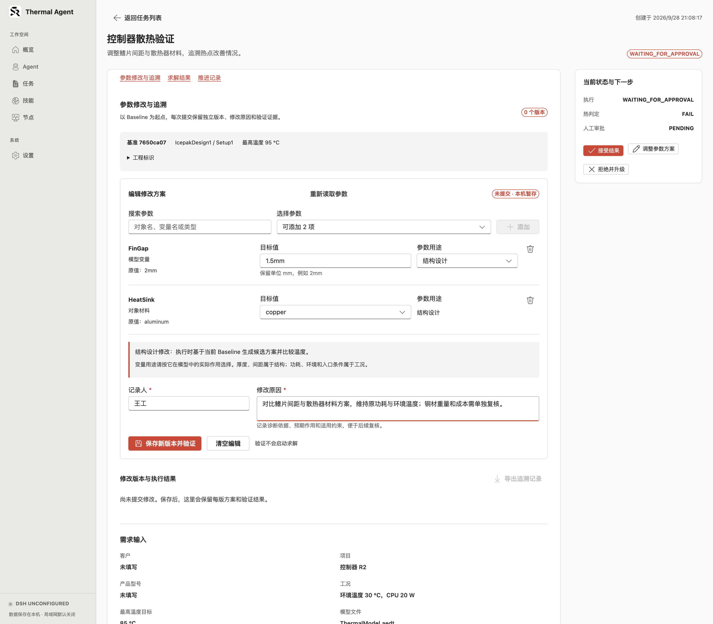
比较版本，追溯验证与结果
“修改版本与执行结果”保存每次提交的原因、记录人、时间和状态。展开版本即可核对参数变化，历史方案通过“复制为新版本”继续编辑，不会覆盖原记录。
- 等待验证结束。“验证中”表示正在工程副本上写入并保存重开；“已验证 · 待执行”表示所选值已被重新读取确认，尚未求解。
- 比较两版内容。展开一个版本，在“与其他版本比较”选择另一版，按参数逐项查看差异。两版均从各自记录的 Baseline 出发，复制方案不代表在上一版工程上累加修改。
- 执行选定版本。确认目标值与原因后，点击“执行 vN 候选求解”。系统使用该版已验证工程；同一任务最多执行一次结构候选，需要 Baseline 为 FAIL 且尚未执行 Candidate。
- 分别核对修改、求解与热判定。“保存后验证”确认参数是否写入；求解状态确认运行是否完成；收敛与温度对比用于复核效果；最终接受结果仍需人工操作。
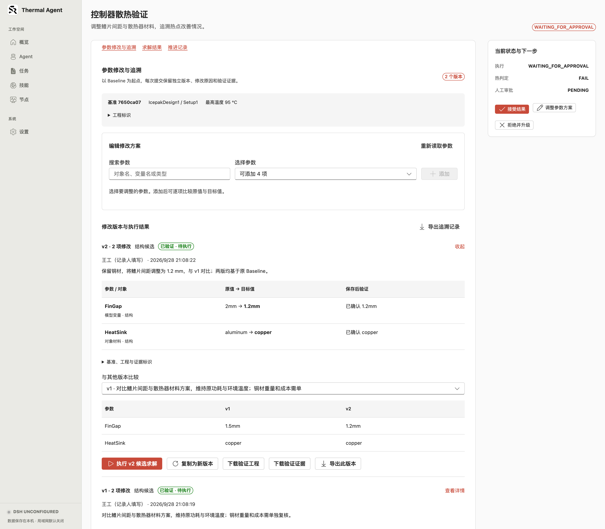
| 看到的状态 | 含义 | 下一步 |
|---|---|---|
| 验证中 | 正在副本上执行写入、保存和重开验证。 | 等待版本状态更新；可以离开页面后再回来。 |
| 已验证 · 待执行 | 参数持久化验证通过，尚未启动求解。 | 对比方案后执行，或复制为新版本修改。 |
| 已提交求解 | 已创建关联运行，不代表求解完成或温度达标。 | 继续查看下方求解状态、最高温度、收敛和温差。 |
| 失败 / 求解 FAILED | 验证、启动或求解某一阶段失败，错误记录保留。 | 验证失败：查看错误并复制为新版本；求解失败：在对应任务的侧栏重试最近 Run，复用已验证工程。 |
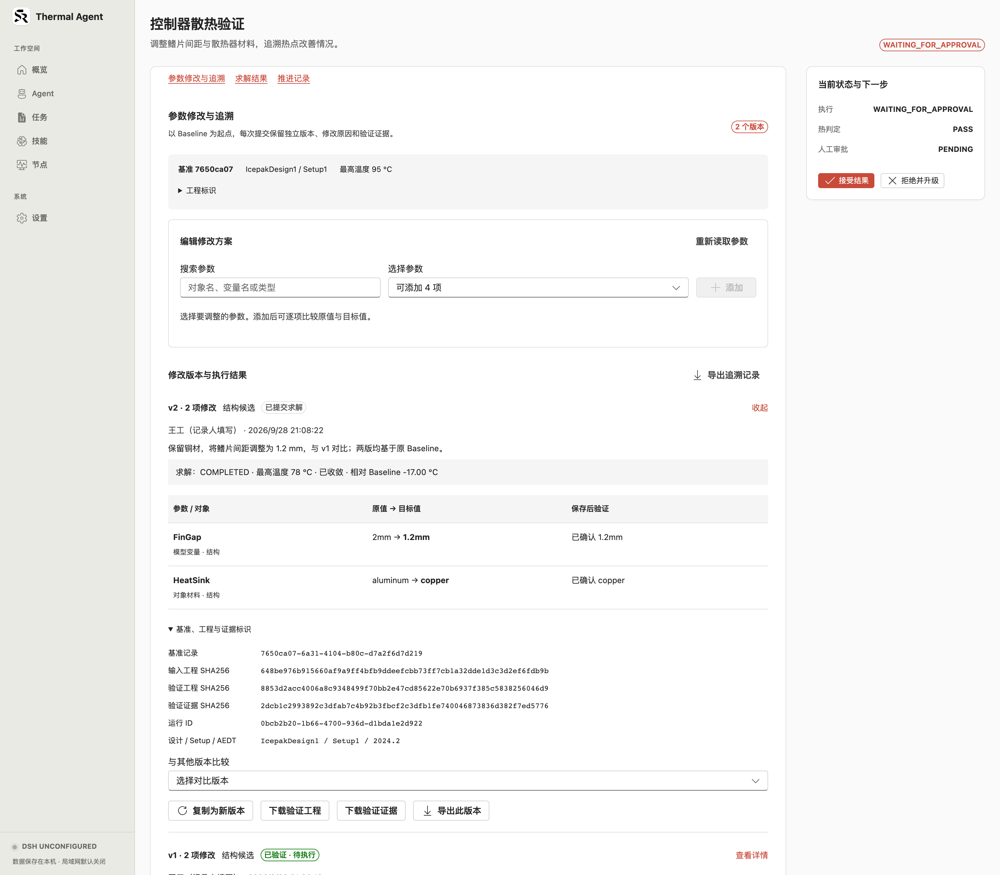
工况改变时，建立关联新任务
降低功耗、改变环境温度等会改变仿真条件。只要方案中包含工况变更，执行入口就变为“创建并求解 vN 新工况”，建立独立 Baseline，保留来源任务。
- 添加工况参数。例如选择热源 CPU，将总功率从
20W改为15W。功率会标记为“工况条件”；在修改原因中说明测试目的。 - 保存并验证。流程与结构参数相同，但用途提示会明确说明创建关联新工况。混合结构与工况修改的方案也走独立 Baseline。
- 创建并求解新任务。验证通过后点击对应按钮；来源版本中出现“打开工况任务”，可查看新任务的运行与审批状态。
- 回查来源。新任务顶部显示“此任务为独立工况基准”，点击“查看来源任务与修改记录”即可回到原任务。
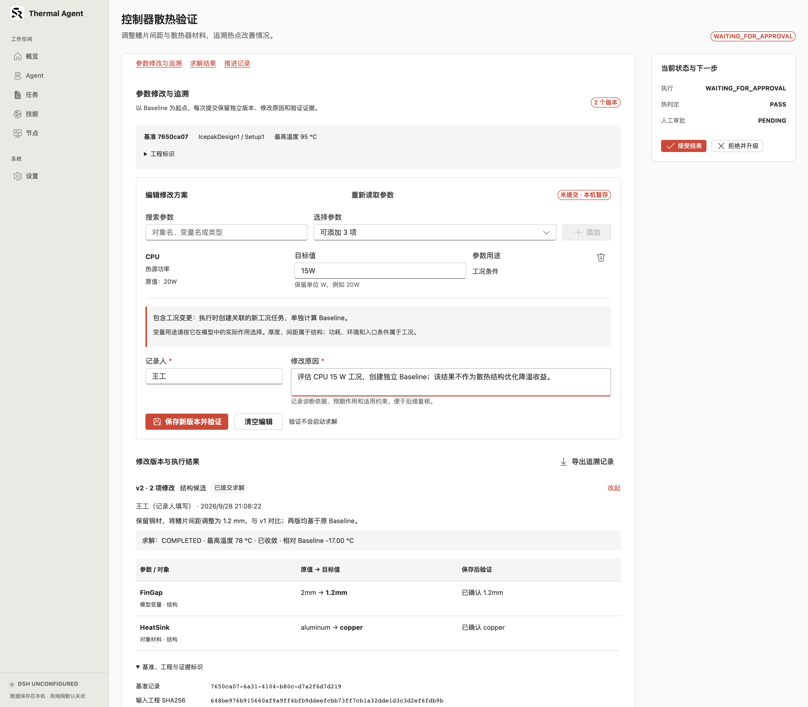
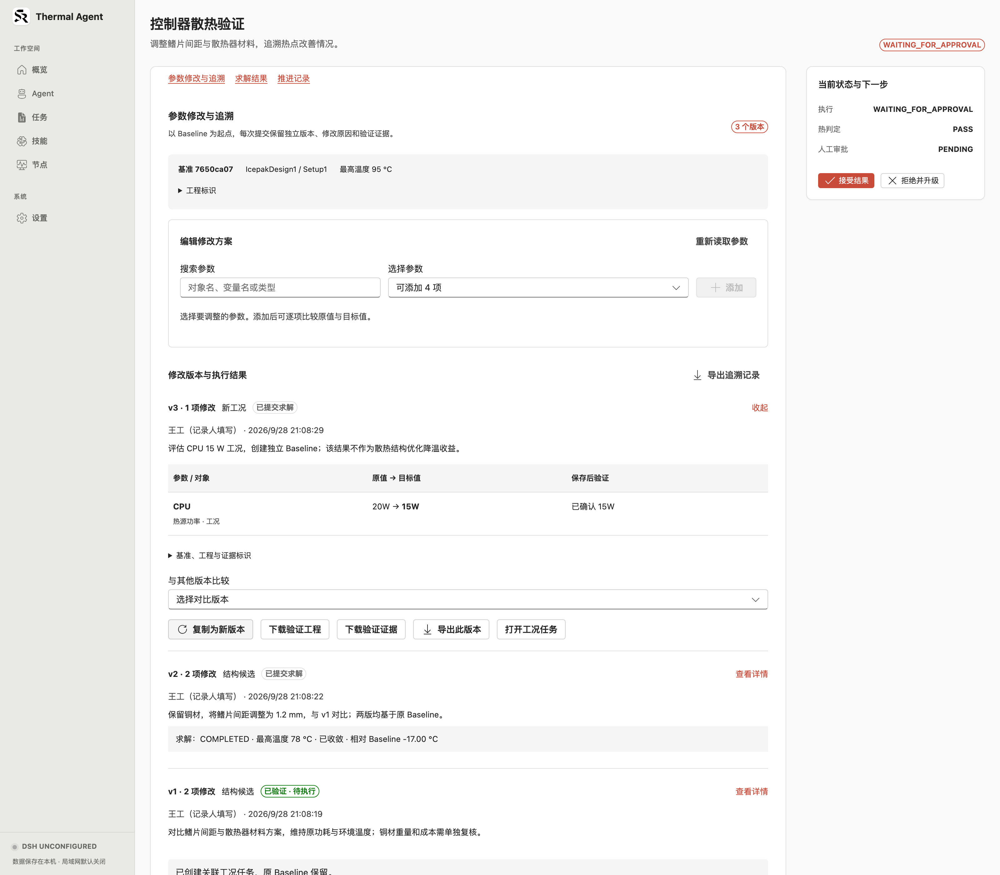
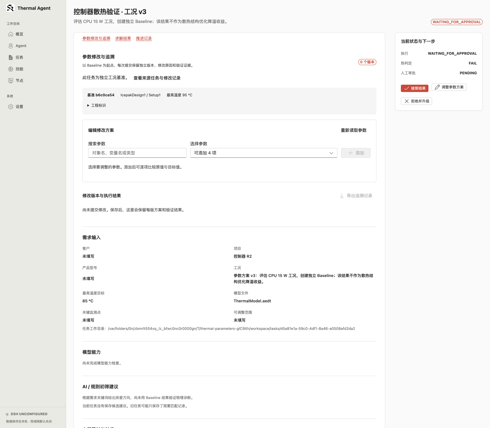
技能库与计算节点
技能库用于查看和维护优化策略；明确要求 Agent 后，也可通过对话新增或版本化修改建议型策略 Skill。计算节点用于身份登记和受控远程执行；单机使用无需配置节点。
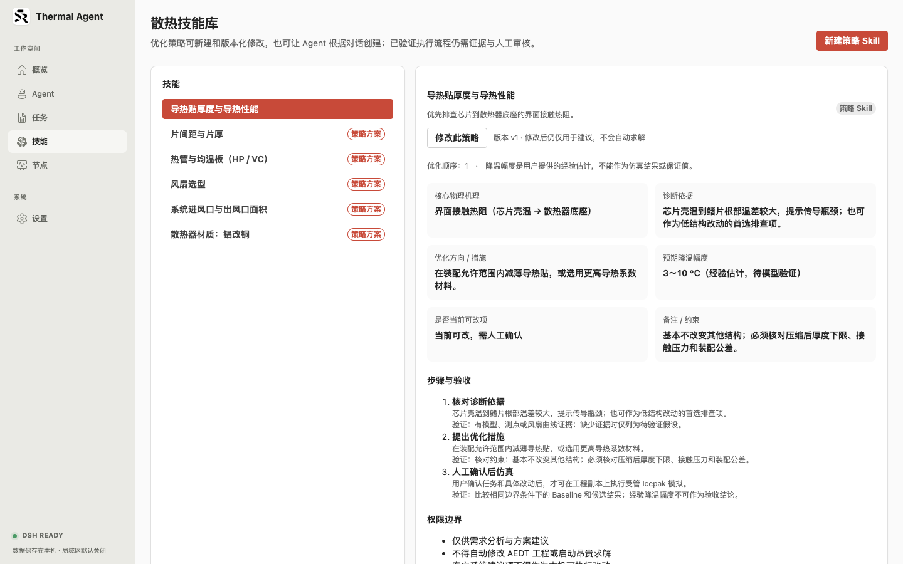
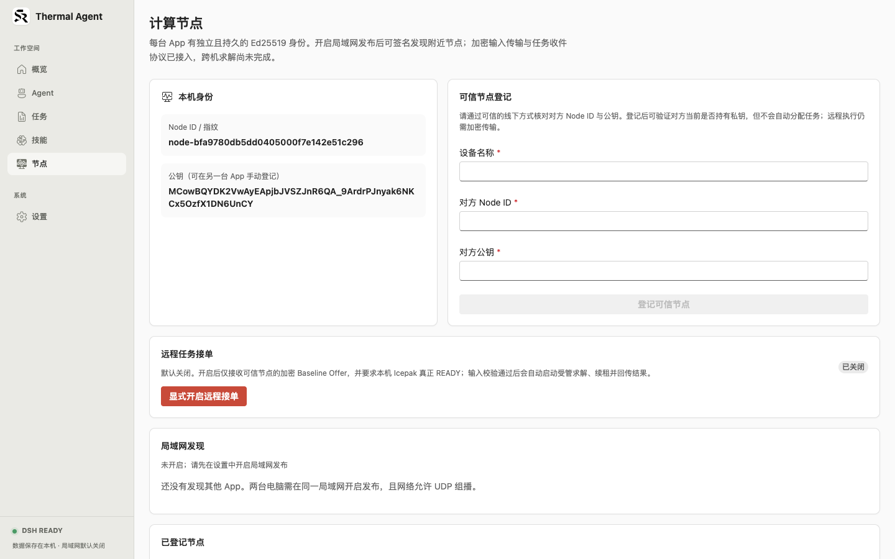
设置与 Agent 对话
设置页管理界面状态、App 工作空间、局域网发布和 Icepak 插件。Agent 用于对话整理需求草稿；最终建单与求解仍需人工回到任务页面核对。
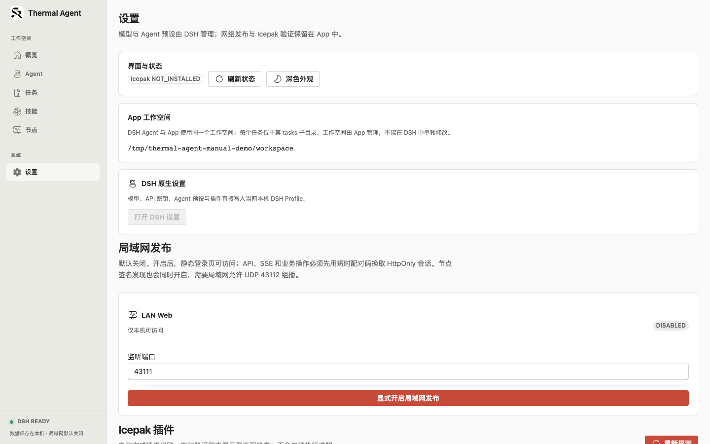